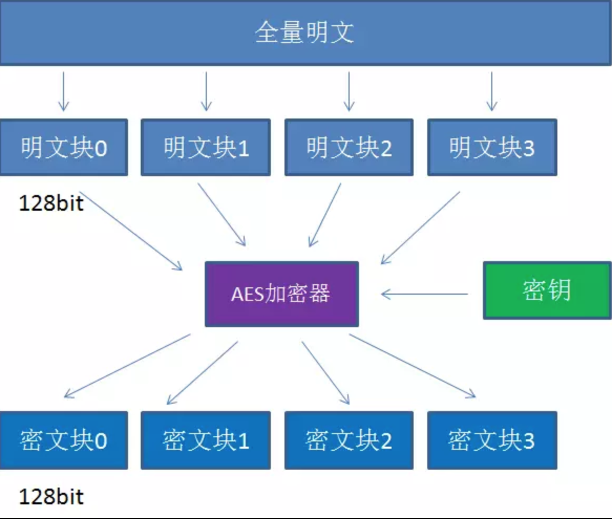

AES加解密¶
openssl enc
高级加密标准（英语：Advanced Encryption Standard，缩写：AES），在密码学中又称Rijndael加密法，是美国联邦政府采用的一种区块加密标准。这个标准用来替代原先的DES，已经被多方分析且广为全世界所使用。经过五年的甄选流程，高级加密标准由美国国家标准与技术研究院（NIST）于2001年11月26日发布于FIPS PUB 197，并在2002年5月26日成为有效的标准。2006年，高级加密标准已然成为对称密钥加密中最流行的算法之一
Rijndael密码的设计力求满足以下3条标准： ① 抵抗所有已知的攻击。 ② 在多个平台上速度快，编码紧凑。 ③ 设计简单。
3个主要概念:
1.密钥
2.填充
3.模式
1.密钥:
密钥是AES算法实现加密和解密的根本。对称加密算法之所以对称，是因为这类算法对明文的加密和解密需要使用同一个密钥
AES支持三种长度的密钥:
128位，192位，256位
平时大家所说的AES128，AES192，AES256，实际上就是指的AES算法对不同长度密钥的使用
2.填充方式:
要想了解填充的概念，我们先要了解AES的分组加密特性
什么是分组加密呢？我们来看看下面这张图
AES算法在对明文加密的时候，并不是把整个明文一股脑加密成一整段密文，而是把明文拆分成一个个独立的明文块，每一个铭文块长度128bit
这些明文块经过AES加密器的复杂处理，生成一个个独立的密文块，这些密文块拼接在一起，就是最终的AES加密结果
但是这里涉及到一个问题
假如一段明文长度是196bit，如果按每128bit一个明文块来拆分的话，第二个明文块只有64bit，不足128bit。
这时候怎么办呢？就需要对明文块进行填充（Padding）
几种填充方式:
1.NoPadding：
不做任何填充，但是要求明文必须是16字节的整数倍。
2.PKCS5Padding（默认）：
如果明文块少于16个字节（128bit），在明文块末尾补足相应数量的字符，且每个字节的值等于缺少的字符数
比如明文：{1,2,3,4,5,a,b,c,d,e},缺少6个字节
则补全为{1,2,3,4,5,a,b,c,d,e,6,6,6,6,6,6}
3.ISO10126Padding：
如果明文块少于16个字节（128bit）在明文块末尾补足相应数量的字节，最后一个字符值等于缺少的字符数，其他字符填充随机数
比如明文：{1,2,3,4,5,a,b,c,d,e},缺少6个字节
则可能补全为{1,2,3,4,5,a,b,c,d,e,5,c,3,G,$,6}
{kind=link}

3.工作模式:
AES的工作模式，体现在把明文块加密成密文块的处理过程中.AES加密算法提供了五种不同的工作模式:
CBC、ECB、CTR、CFB、OFB
模式之间的主题思想是近似的，在处理细节上有一些差别.我们这一期只介绍各个模式的基本定义
1.CBC模式:
电码本模式 Electronic Codebook Book
2.ECB模式(默认):
密码分组链接模式 Cipher Block Chaining
3.CTR模式:
计算器模式 Counter
4.CFB模式:
密码反馈模式 Cipher FeedBack
5.OFB模式:
输出反馈模式 Output FeedBack
几点补充:
1.我们在调用封装好的AES算法时，表面上使用的Key并不是真正用于AES加密解密的密钥，而是用于生成真正密钥的“种子”
2.填充明文时，如果明文长度原本就是16字节的整数倍，那么除了NoPadding以外，其他的填充方式都会填充一组额外的16字节明文块
openssl aes命令¶
openssl使用实例(128位cbc):
1. 将要加密的内容输入到plain.txt
echo "1234567890abc" > plain.txt
2.使用openssl加密. -p 表示打印出加密用的salt, key, iv. salt就是所谓的加盐,
防止同样的内容产生同样的加密数据. iv和key是openssl 的cbc模式需要的参数:
$> openssl enc -aes-128-cbc -in plain.txt -out encrypt.txt -iv f123 -K 1223 -p
salt=E0DEB1EAFE7F0000
key=12230000000000000000000000000000
iv =F1230000000000000000000000000000
3.输出加密前和加密后内容的十六进制. 这里使用xxd和hexdump都可以:
xxd plain.txt
00000000: 3132 3334 3536 3738 3930 6162 630a 1234567890abc.
xxd encrypt.txt
00000000: c5af 18cb ddee 9923 0374 6a21 9bb6 3f99 …#.tj!..?.
4.解密加密后的数据:
openssl aes-128-cbc -d -in encrypt.txt -out encrypt_decrypt.txt -S E0DEB1EAFE7F0000 -iv F1230000000000000000000000000000 -K 12230000000000000000000000000000
-S salt Salt to use, specified as a hexidecimal string
-salt Use a salt in the key derivation routines (default)
5.查看解密后的数据和原始数据是否一致.
xxd encrypt_decrypt.txt
00000000: 3132 3334 3536 3738 3930 6162 630a 1234567890abc.